1. 태초에 2명의 신이 존재했다.
먼저 그리스 로마 신화가 떠오르는 초반 스토리가 있습니다.
태초에 무질서와 혼돈(카오스) 속에서 오랜 시간이 지난 뒤 질서(코스모스)가 생겼습니다.
이 질서를 관장하는 신이 바로 '루페온', 로스트 아크 시리즈의 '주신'이자 '최고신' 개념입니다.(1섭인 이유)
루페온은 먼저 대우주인 '오르페우스'를 창조했고,
이어서 영원 불멸의 빛인 '아크'를 창조하여, 이를 통해 절대 꺼지지 않는 태양을 만들어 띄웠습니다.
하지만 태양과는 별개로 생성된 여러 별들은 탄생과 죽음, 유한한 수명을 반복했습니다.
루페온은 영원성과 생명을 상징하는 태양을 탄생시킨 동시에, 유한한 죽음 역시 탄생시킨 것입니다.
그리고 이 와중에 가장 공들여서 만든 별이 바로 '아크라시아' 였습니다.
이 별은 스스로 창조하는 능력을 지니고 있었죠.
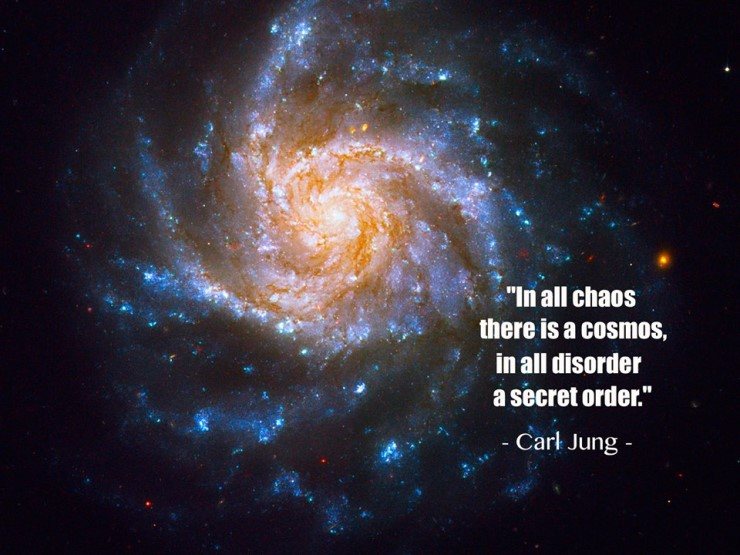
2. 그 후에 일곱신이 존재했다.
루페온은 아크의 힘을 빌려 만든 아크라시아를 관리하기 위한 7명의 신을 만들어 냅니다.
그리고 각기의 일곱 신은 특정 권능을 부여받고, 아크라시아에서 살아갈 생명을 창조해냅니다.
명예의 신 프로키온은 라제니스 종족을,
지혜의 신 크라테르는 실린 종족을,
불꽃의 신 안티레스는 할 종족을,
조화의 신 기에나는 포시타족을,
생명의 신 알데바란은 정령들을,
빙결의 신 시리우스는 타베르 종족을,
대지의 신 아크투르스는 거인족과 우마르 종족을,
그리고 이 중 기에나와 시리우스가 합작하여 '인간'을 창조해냅니다.
대부분의 서버이름이 이 신들의 이름에서 따온 것이죠.
원래는 1개의 덩어리로 관리하던 아크의 지나친 힘을 감당하지 못하던 중간계 존재들을 위해
이 신들은 아크를 7조각으로 만들어 각자 관리하게 됩니다.
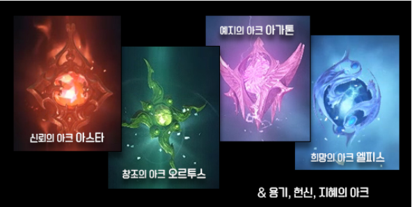
- 현재까지 공개된 아크조각(총 7개중 4개)
신들이 창조해낸 종족중에 라제니스와 실린, 할은 상위 종족으로 분류되어 신들의 권능을 이어받게 됩니다.
날개 종족 라제니스는 루페온을 본따 만든 종족이기에 세상을 관찰, 조율하는 역할을,
마법 종족 실린(법사 종족)은 마력을 부여 받았고,
전투 종족 할은 전투 능력과 뛰어낭 모략을 부여 받았습니다.
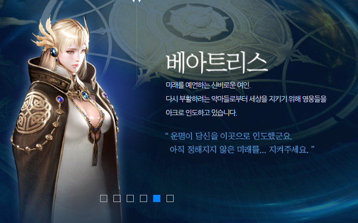
하지만 이 중 더 큰 힘을 원하던 할은 자신들의 신인 '안티레스'를 속여 아크 조각을 손에 넣게 됩니다.
그리고 세상을 독차지하려 들자 이를 막기 위해 다른 상위종인 라제니스와 실린이 연합하게 되지만, 아크의 힘을 얻은 할 종족을 이길순 없었습니다.
결국 라제니스 종족들은 본인들의 신인 프로키온 몰래 마찬가지로 아크조각을 얻어 할을 제압하는데 성공합니다.
하지만 이를 안 루페온이 극대노하여, 할 종족에게는 소멸형을, 종족관리를 못한 안티레스에게는 추방형을, 아크를 관리하지 못한 프로키온에게는 말할 수 있는 능력을 빼앗아버렸고 마지막으로 아크를 몰래 가져간 라제니스 종족에게는 날개를 퇴화시켜 날지 못하게 만들었습니다.
그리고 신계의 중간계 사이인 곳에 '트리시온'이라는 곳을 만들어 중간계를 조율하는 역할 대신, 미래와 운명을 엿보는 역할을 수행하는 형벌을 부여했습니다.
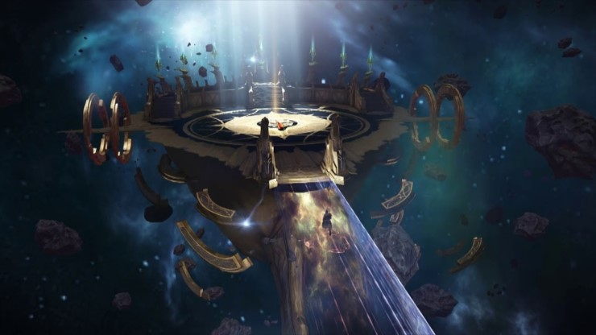
- 모든 플레이어가 거쳐가는 장소, 트리시온.
3. 혼돈의 침략과 가디언의 탄생
이 때 오랜 시간 동안 아크를 원했던 이그하람은 아크라시아의 내분을 기회로 삼아 '어둠의 생명'과 함께 침략을 감행하게 됩니다.
인게임에서도 볼수 있는 악마들이 넘어오는 통로, '카오스게이트'를 열어 기세를 병력을 대거 투입하게 된거죠.
루페온과 그 휘하의 신들과 이그하람과 그 휘하의 어둠의 생명들은 치열한 접전을 벌였는데, 예상치 못한 국면을 맞이하게 됩니다.
바로 대우주 그 자체인 오르페우스가 차원간의 공명으로 인해 아크라시아를 집어삼키기 시작한 것.
질서와 무질서 양측을 모두 '무'로 되돌리는 대우주의 잠식으로 인해 양측은 전쟁을 중단했고,
사태를 막기위해 루페온은 아크를 사용, 이그하람의 혼돈의 힘과 결합해 '가디언'이라는 중립적 관리자를 탄생시켰습니다.
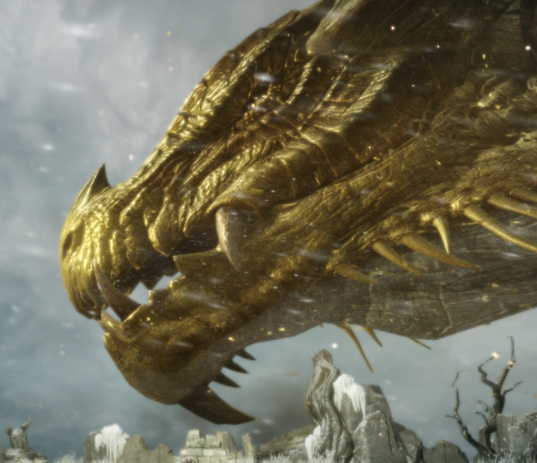
- 최초의 가디언이자, 가디언들의 신인 에버그레이스.
에버그레이스를 필두로 아크라시아에는 많은 가디언들이 존재하게 되었습니다.
이 가디언들은 힘을 합쳐 대우주 오르페우스의 잠식을 막는데 성공했고, 임무 완수후 오랜기간 잠에 빠지게 됩니다.
이로써 질서와 혼돈의 1차 대전쟁은 막을 내리게 됩니다.
4. 혼돈의 재편성
1차 대전쟁 이후 루페온의 아크라시아는 풍요와 번영을 누리게 되었지만,
이그하람이 다스리는 페트라니아는 혼돈이 가속화되어 갔습니다.
혼돈의 신인 이그하람은 혼돈 자체가 힘의 원천이었기에 이를 방관했지만, 이 혼돈을 평정하는 자가 나타났으니,
스스로를 심연의 군주라고 칭한 '카제로스'라는 존재였습니다.
카제로스는 다른 어둠의 생명들과는 다르게 심연에서 올라온 존재였고, 최초로 '악마'를 탄생시켜 빠르게 페트라니아를 평정해 나갔습니다.
혼돈의 힘이 사라져가는걸 느낀 이그하람은 카제로스를 비롯한 악마를 심연으로 되돌리려 했으나, 오히려 자신의 수하였던 어둠의 생명들까지 배신하며 역으로 당하며 죽음에 이르게 됩니다.
이때 이그하람의 혼은 2개로 나뉘어 흩어지게 됩니다.
이후 카제로스는 자신을 섬기는 6명의 악마군단장을 편성하게 됩니다.(인게임에서 4천왕으로 보였던 자들)
몽환군단장 이브렐슈드(법사 튜토때 처들어온 악마)
질병군단장 일리아칸
마수군단장 발칸
욕망군단장 에키드나(현재 비아키스)
광기군단장 쿠크세이튼(정크렛)
어둠군단장 카멘
이 중 에키드나는 카제로스가 가장 아끼던 이브렐슈드의 자리를 탐내다가 처형당하게 되고,
이를 대신해 비아키스가 대신하게 됩니다.
하지만 현재 비아키스도 이브렐슈드를 시기, 질투하고 있어 사이가 좋지 않다고 합니다.
쿠크세이튼은 가장 많은 하급 악마들을 지니고 있는 물량공세 군단을 만들게 되고(딱 봐도 최약체)
카멘은 소수 정예지만 가장 강한 군단을 지니게 됩니다(군단장 중 최강)
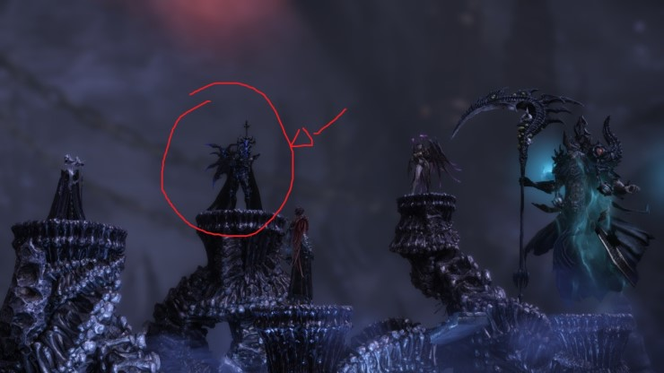
5. 세이크리아 대학살
한편 오랜 시간 번영을 이뤄왔던 아크라시아에도 위기가 다가왔습니다.
루페온을 섬기는 대주교의 종교 국가 세이크리아는 성기사단으로 유명했지만, 사실 극소수의 정예 멤버로 이뤄진 '새벽의 사제'라는 조직이 존재했습니다.
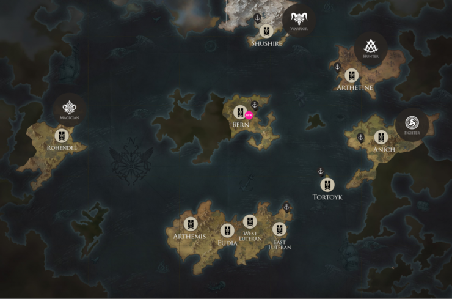
- 아크라시아의 중간계 지도
세이크리아아의 대주교인 테르메르 2세는 본인 국가에서 보관중이던 아크의 힘에 매료되어 다른 아크를 모으는 것에 혈안이 되었지만 끝내 이를 이루지 못하고 죽게 됩니다.
하지만 그의 아들인 테르메르 3세는 아버지보다 더한 욕심으로 아크를 탐하기 시작했습니다.
그는 여섯 대륙에 숨겨진 아크에 대한 정보를 토대로 아크를 수집하기 시작했고,
'신의 뜻'이라는 명분 아래에 아르테미스 연방(튜토 직후 초반부)과 북부의 슈사이어 지방(전사직업의 튜토지역)으로부터 아크를 양도받게 됩니다.
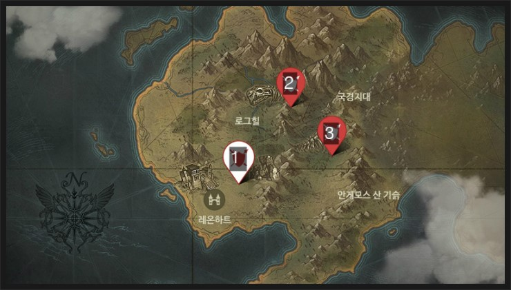
초반부 지역, 아르테미스
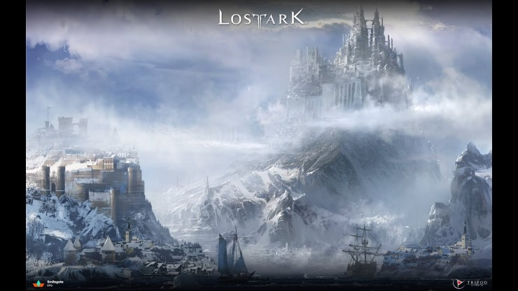
전사들의 극지방, 슈사이어
- 이 두 지역에서 먼저 아크를 양도받았다.
그리고 루페온을 섬기던 바다의 포시타족의 해저 도시에서 4번째 아크를 얻게 되죠.
여기까지는 평화로운 방법으로 아크를 손에 넣은 테르메르 3세였지만, 그 이후부터는 쉽게 얻을수가 없었습니다.
그는 수단과 방법을 가리지 않게 되었고,
5번째 아크를 몸속에 지니고 있던 거인, 도메메크에게 방아쇠를 겨누게 됩니다.
테르메르3세는 순순히 아크를 내놓지 않던 도메메크를 죽이고 그 속의 아크를 얻게 됩니다.
6번째 아크는 쿠르잔 지역에 위치한, 추방된 안티레스가 다스리던 안티레스 산 꼭대기에 존재했는데,
이를 얻기 위해 수많은 성기사를 희생하게 됩니다.
그리고 아크가 사라진 후 안티레스 산은 화산이 대대적으로 폭발하며 쿠르잔 지역에 있는 모든 생명체를 녹여버렸고, 누구도 살지 못하게 되어버립니다.
이 사건으로 인해 훗날, 이 쿠르잔 지역은 북서쪽의 페이튼과 더불어 저주받은 땅이라 불리게 됩니다.
그리고 대망의 마지막 7번째 아크는 바로, 태초의 3대 고위 종족 중 하나이자, 마법의 종족이었던 실린의 고향, 로헨델(법사 튜토지방)에 존재했습니다.
그리고 이 마지막 아크를 얻기 위한 과정은 그 어떤 때보다 참혹했습니다.
6. 포튼쿨 전쟁 발발
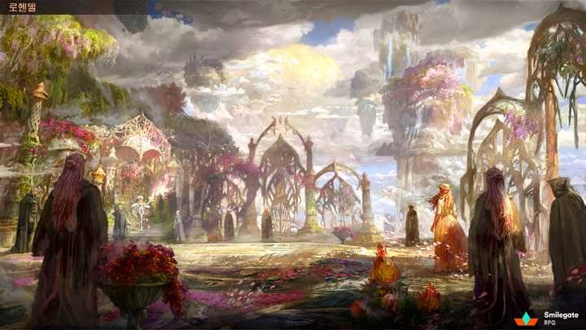
실린의 나라이자 마법사의 국가, 로헨델
실린 역사상 가장 강력했던 자매, 이난나와 아제나는 본래 자매였고 각기 다른 육체를 지니고 있었지만, 로헨델의 마력핵 붕괴 사건 당시 이를 저지하던 이난나의 육체가 붕괴해 아제나의 육체로 전이하게 되었습니다.
하나의 육체에 2개의 영혼이 정착하게 된거죠.
완전한 하나가 된 자매는 세계수로부터 영원불멸의 힘을 얻게 되고, 이를 바탕으로 로헨델을 통치하고 있었습니다.
그리고 이 여왕인 자매만이 허용해야 들어갈 수 있었던 '여왕의 정원' 그곳에 7번째 아크가 존재했습니다.
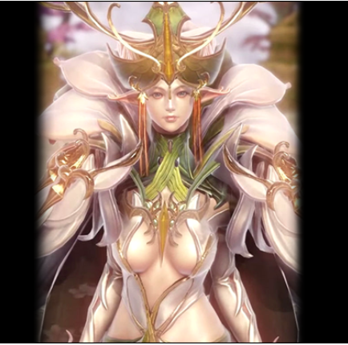
로헨델의 여왕(이난나의 형태, 자상하고 대외관계가 좋다.)
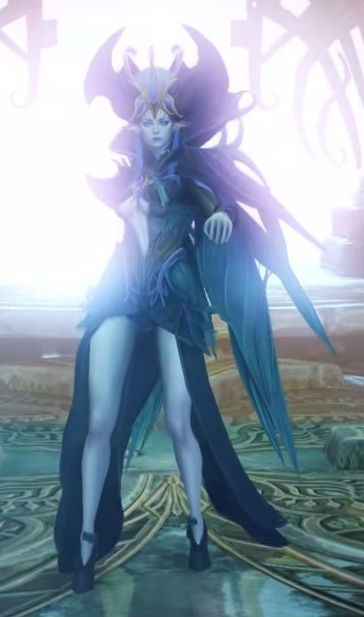
로헨델의 여왕(아제나의 형태, 냉철하고 전투력이 매우 높다)
고위종족 실린들과 그 여왕의 강력함을 알고 있던 세이크리아의 테르메르 3세는 아크를 얻기위해 전쟁을 불사하면 피해가 클 것을 감안하여 묘수를 생각해냅니다.
이난나, 아제나 자매와 거인 도메메크가 친분이 있는것을 활용, 생명을 다한 도메메크의 심장을 그와 친우였던 실린 여왕에게 양도한다는 목적에서 사절단으로 속인 새벽의 사제들을 파견합니다.
이 사절단을 반기던 여왕은 아크가 있던 여왕의 정원에 그들의 출입을 허가하고,
그 과정에서 아크를 훔치던 사절단이 몇몇 실린에게 목격당하게 됩니다.
그리고 목격자를 제거해야만 했던 사절단은 새벽의 사제를 활용해 실린을 죽이게 되고,
실린의 죽음, 그리고 도메메크의 죽음마저 세이크리아와 테르메르 3세의 소행이란걸 깨달은 실린 여왕은 극대노하며 세이크리아와의 전쟁을 선포하게 됩니다.
이는 후에 전쟁 후에 아무것도 얻은게 없다는 의미에서 속이 빈 열매를 뜻하는 '포튼쿨 전쟁'이라고 불리게 됩니다.
실린 종족은 도메메크의 사건에 분노한 거인족과 그의 우방국이었던 우미르족, 정령들과 연합전선을 이루게 되고,
세이크리아 연방의 영향에 있던 슈사이어, 아르테미스 연방과 기타 소국이 연합전선을 이루게 됩니다.
하지만 분노한 상위종족, 실린 족은 너무나 강력했고, 실련 여왕 아제나의 힘은 실로 막강했습니다.
결국 인간 연합 측은 수세에 몰리게 되고, 마침내 최후의 보루였던 지금까지 모았던 아크를 사용하기에 이릅니다.
7. 가디언의 재림, 그리고 가디언 슬레이어
세이크리아 측의 아크 활용으로 전쟁은 백중지세에 이르게 되었고, 전쟁이 길어지며 아크라시아는 점점 피폐해지기 시작했습니다.
결국 이로 인해 세계를 조율하던 관리자 역의 가디언이 다시금 각성하게 됩니다.
중립 성격을 띄던 가디언은 실린 연합측과 인간 연합측 양측을 무차별적으로 제압하기 시작했고, 이 과정에서 전쟁의 주범인 테르메르 3세는 사망하게 됩니다.
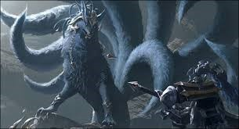
- 전쟁에 개입한 가디언.
실질적 지도자인 대주교 테르메르 3세를 잃은 인간측과, 가디언의 힘에 세계수까지 상처를 입은 실린측은 종전을 선언하게 됩니다.
하지만 이를 지켜보던 가디언들은 앞으로 중간계 종족에 대한 처우에 대해 고민하기 시작했습니다.
가디언들의 신이자 1인자인 에버그레이스 다음가는 2계위종인 가디언 바르칸은 중간계 종족들의 행위를 부정적으로 보며 중간계 종족을 전부 삭제시키고 다시 만들어야 한다고 주장했습니다.(말리고스를 보는듯 하군요.)
하지만 마찬가지로 2계위 가디언이었던 가디언 루는 중간계 종족을 더 믿어주자고 주장했습니다.
그 둘의 의견 사이에서 고민하던 에버그레이스는 루의 의견을 따르기로 했고, 바르칸도 에버그레이스의 말에 불만 없이 복종했습니다.
그런데 그때, 일이 터졌습니다.
단 1명의 인간이 세상의 관리자였던 가디언을 죽이는 사건이 일어난 것입니다.
그의 이름은 '카단'.
훗날 최초의 가디언 슬레이어라고 불리게 된 사내였습니다.
공교롭게도 카단이 죽인 가디언 베헤모스는 바로 가디언 바르칸의 휘하였습니다.
아끼던 휘하 수하를 잃은 바르칸은 인간들의 우매한 행동에 다시금 대노했고, 상관인 에버그레이스의 만류에도 최초로 불복하며 '카단'을 처치하러 갑니다.
한편 이 사건에 신경을 기울이던 에버그레이스는 더 중요한 일을 눈치채지 못했습니다.
아크의 사용과 가디언들의 활동으로 인해 어둠의 별 페트라니아와의 차원 통로가 열리려고 한다는 점을.
8. 사슬전쟁과 에스더
놀랍게도 카단의 무력은 2계위종 가디언인 바르칸과 동급이었습니다.
그 둘이 호각으로 겨루던 도중, 페트라니아로의 차원의 균열이 완전이 열리며,
오랜 시간 기회를 엿보던 '카제로스'와 6인의 악마군단장, 그리고 수많은 악마가 아크라시아를 침략하기 시작했습니다.
과거 아크라시아로 연결된 통로인, '카오스게이트'를 통해서 말이죠.
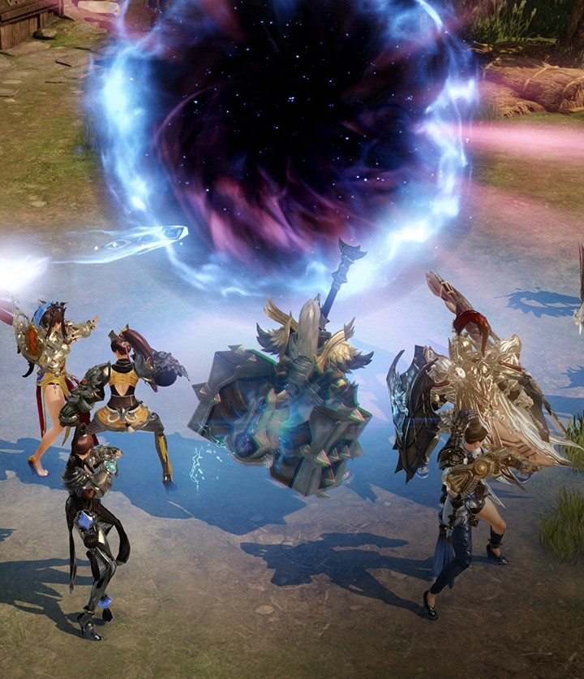
어쩔 수없이 카단과의 싸움을 멈춘 바르칸은 상관인 에버그레이스와 수많은 가디언들, 그리고 아크라시아의 나머지 종족과 연합하여 악마 군단들과의 싸움을 시작했습니다.
이게 바로 역사상 가장 길고 잔혹했던 전쟁인, 끊이지 않는 사슬 같다고 하여 이름이 붙은 사슬전쟁의 시작이었습니다.
최강의 가디언이자 최초의 가디언인 에버그레이스는 카제로스를 직접 상대했고, 2인자인 바르칸은 악마군단장 중 최강인 카멘을 막아섰습니다.
처음에는 아크라시아 측이 우세했지만, 카제로스는 페트라니아에만 존재했던 '붉은 달'을 형성해서 악마들의 전투력을 상승시켰고,
본래 혼돈에 더 가까운 성향이었던 바르칸(원래 가디언이 질서와 혼돈의 힘 다 지님)이 카제로스의 힘에 매료되어 자신을 따르는 가디언들을 데리고 에버그레이스를 배신하기에 이릅니다.
붉은 달의 출현과 일부 가디언의 배신으로 수세에 몰린 아크라시아 측.
중간계의 존재들은 루페온과 신을 찾았지만 어떤 신도 손을 내밀지 않았습니다.
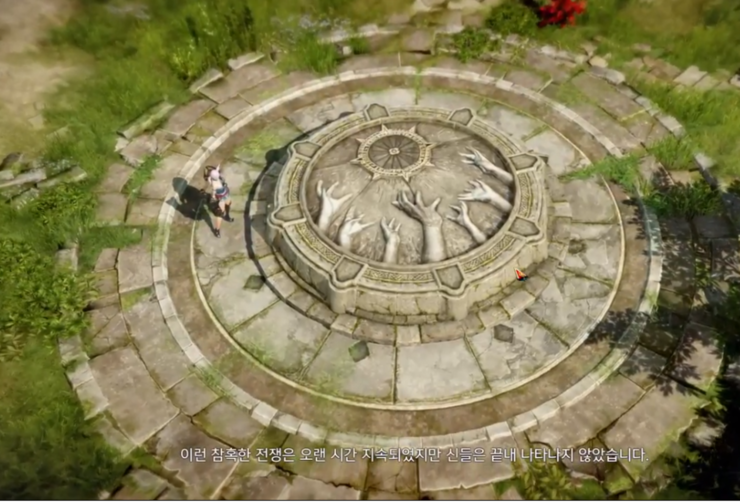
-극초반부 로그힐의 석상 퀘스트에 등장하는 스토리
하지만 희망은 절망 끝에 피어난다고 했습니다.
신들 대신 아크라시아를 구원하러 나타난 메시아가 있었으니,
바로 7영웅이라 불리는 에스더란 존재였습니다.
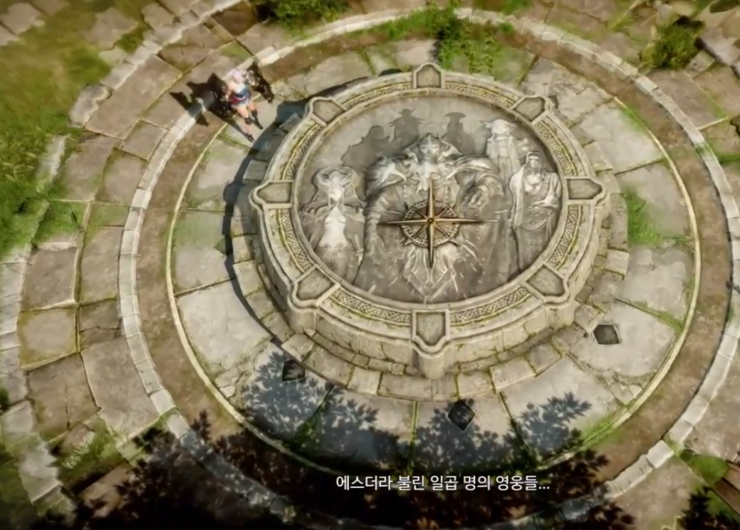
- 각 종족별, 각 클래스별로 등장한 7인의 영웅.
기사왕국 루테란의 왕인 루테란을 필두로,
최초의 가디언 슬레이어였던 카단,
실린 여왕이자 마법여제인 아제나,
그리고 산디, 시엔, 갈라투르, 니나브로 구성된 7인의 용병단.
마치 어벤져스를 연상시키며 등장한 그들은 각자 악마 군단장을 상대하기 시작했습니다.
최초의 가디언 슬레이어이자 바르칸과 호각을 다퉜던 카단은 최강의 군단장인 카멘과 사투를 벌였습니다.
카제로스의 오른팔이자 마법에 특화된 몽환군단장 아브렐슈드는 실린 여왕 아제나가 상대했습니다.
실제로, 아브렐슈드와 아제나는 법사 튜토리얼에서도 대결을 하게 되는데, 서로 우세를 점하지 못하는 백중지세를 보이죠.
이 둘은 사슬전쟁때부터 숙명의 라이벌이었습니다.
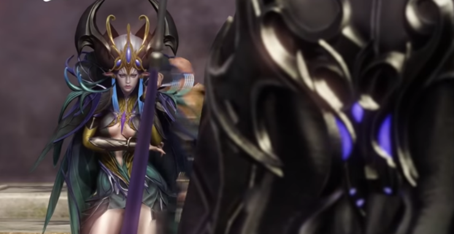
-법사 튜토 당시 호각이었던 아제나와 아브렐슈드의 대면 장면
카단과 카멘, 아제나와 아브렐슈드.
이 두 대결은 한치 앞을 내다볼수 없을 정도로 치열했습니다.
하지만 다른쪽은 달랐습니다.
에스더의 리더격이었던 루테란은 에버그레이스를 도와 카제로스를 공격했지만 역부족이었습니다.
에버그레이스는 루테란에게 다른 영웅들을 도우라고 하며 전음(교신)으로 한 가디언에게 몰래 아크를 가져오라고 지시했습니다.
마수군단장인 발칸을 상대하던 대장장이 갈라투르는 서서히 밀리기 시작했는데, 이때 에버그레이스의 충고로 그를 도우러 온 루테란의 협공으로 발칸에게 큰 상처를 입히고 패퇴시킵니다.
그러나
욕망군단장인 비아키스를 상대로는 니나브가,
광기군단장인 쿠크세이튼을 상대로는 산디,
질병군단장인 일라아칸을 상대로는 시엔이
분투했지만 호각지세에서 서서히 밀리기 시작했습니다.
에스더의 합류로도 전쟁의 분위기 반전이 힘들어지기 시작한 시점,
에버그레이스의 명을 받았던 가디언, 미스틱이 마침내 아크를 모아 가져왔습니다.
아크로 인해 전장의 흐름은, 또한번 반전을 이루게 됩니다.
9. 종전, 그리고 개척의 500년
미스틱이 가져온 7개의 아크조각은 기사왕 루테란에게 전해졌고,
루테란이 아크를 사용하자 아크에서 흘러나온 빛은 성스러운 기둥으로 변했고,
곧이어 사슬이 생성되어 카제로스를 옭아매었습니다.
자신의 육체의 봉인을 막을수 없었던 카제로스는 육체와 영혼을 분리하여 악마군단장들과 함께 차원의 틈으로 넘어가 퇴각했습니다.
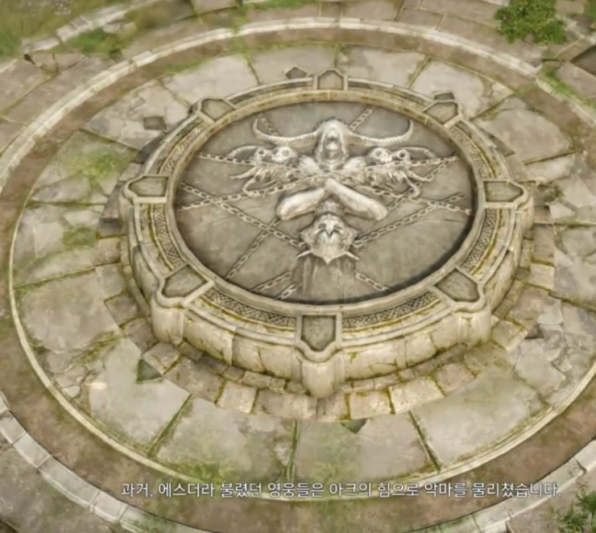- 아크의 사슬로 인해 봉인된 카제로스.
이후 가디언들은 카제로스의 육체를 아무도 손 닿을수 없는 쿠르잔의 안티레스 화산 심장부에 봉인시켰고, 아크를 다시 7개의 조각으로 나누어 7인의 에스더에게 나누어 전세계에 나누어 보관하기로 했습니다.
전쟁과 사후수습이 종결되자, 가디언들은 2계위종 가디언 '루'만을 제외하고 다시 활동을 멈추었고 신의 성물이라 기록되기 시작했으며, 에스더는 인간들의 영웅이라 불리게 되었습니다.
에스더는 각자의 길을 걷기로 했는데, 이중 에스더 시엔은 인간들을 사랑하던 가디언 '루'와 함께 갈곳 잃은 사람들을 데리고 동쪽에 아무도 살지 않던 대륙으로 가 정착하게 되었습니다.
바로 이 시엔이 만든 나라가 무도가들의 튜토 지역, 동방의 '애니츠'입니다.
악마들과의 싸움에서 몸이 침식당한 루는 치료를 위해 성역에 들어가게 되었고, 시엔의 시련을 통과한 사람만 자신의 성역에 들어올 수 있도록 하라 명하였습니다.
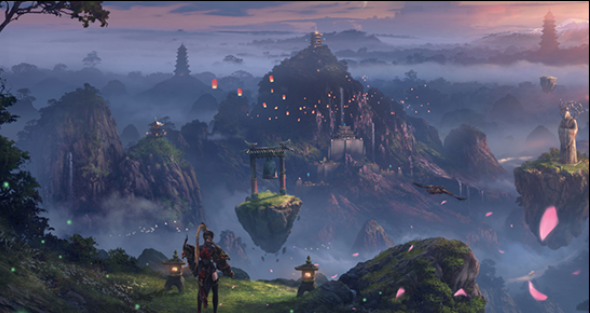
-무도가의 고향, 애니츠. 에스더 시엔으로부터 건국되었다.
이후 시엔은 자신의 몸에 있던 일부 힘을 제어하지 못하게 되었고, 가디언 루를 침식하던 악마의 힘이 일부 해방되어 사람들이 서로 다투게 되었습니다.
시엔은 자신을 받들던 '적운'과 '연이삭'에게 애니츠 지방의 통치를 맡기고 몸을 제어하기 위해 루와 함께 성역으로 자취를 감췄습니다.
시엔은 적가문과 연가문의 자제들에게 일부 시험을 통해 지혜로운 자를 뽑아 국가의 정치를 맡기게끔햇고 차후 '대사부의 시험'으로 물려지게 되었습니다.
한편 사슬전쟁 이후 모든것의 원흉이었던 테르메르 가문을 세이크리아에서는 파문하였으며, 그들을 받들던 새벽의 사제, 그리고 서포트하던 과학자, 연구자 집단을 전부 추방했습니다.
추방당한 연구자들은 세계를 배회하다가 아무도 살지 않던 사막에 연구시설을 지어 생존하기 시작했고,
이윽고 거대한 집단지성으로 엄청난 기계 문명을 이루게 되었습니다.
이가 바로 기계대륙 '아르테타인'이며 그 중 수도 '토트리치'를 세우게 되는 과정이었죠.
바로 헌터의 튜토 지방이 바로 이곳, 토트리치입니다.
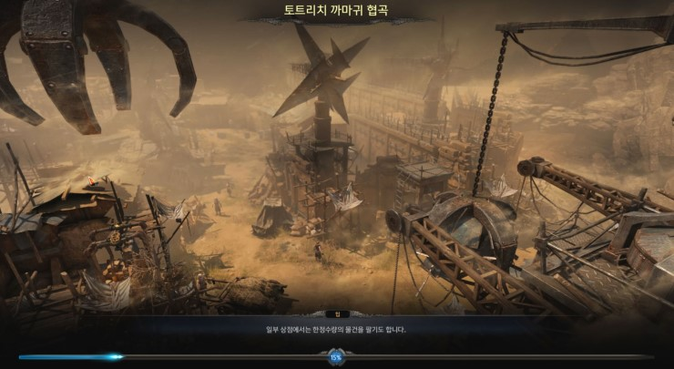
-헌터의 시작 지점인 토트리치, 세이크라이에서 추방된 과학자들이 건설한 도시다.
신체의 효율성을 극대화하는 실험을 계속하던 그들은 결국 뼈대를 교체하던 과정에서 붉은피가 아닌 푸른피가 흐르는 인종으로 진화하였고, 스스로를 인간이 아닌 '케나인'이라 칭하기 시작했습니다.
새 종족의 시작이었고, 이들은 진화와 발전이 최고의 가치라 믿게 되었습니다.
 또다른 한편, 에스더 아제나와 이난나가 다스리던 로헨델에도 변화가 생겼습니다.
아제나와 겨뤘던 악마군단장 아브렐슈드는 사슬전쟁 시기 로헨델의 일부 실린에게 접근하여 내분을 유도했습니다.
'제나일' 부족의 실린을 비롯한 현혹된 일부 실린은 지나친 마법에 대한 욕망을 추구하다 로헨델 일부 지역을 폐허로 만들었으며,
이를 알게된 아제나는 나머지 부족이 그들을 차별할 것을 알고 제나일 부족을 추방하기로 결심한합니다.
결국, 추방된 실린들은 아크라시아 가운데에 위치한 대륙에 자리잡았고, '베른'이라는 또다른 국가를 건설하게 됩니다.
그리고 제나일의 부족장, 에아달린은 그곳의 여왕이 되었고, 갈곳 없는 다른 여러 종족을 전부 받아들여 조화와 창조의 땅으로 발전시켜나갔습니다.
보수적이고 폐쇄적인 고향 로헨델과는 다르게, 무역의 중심지로 떠오르며 개방적인 국가로 자리매김했죠.
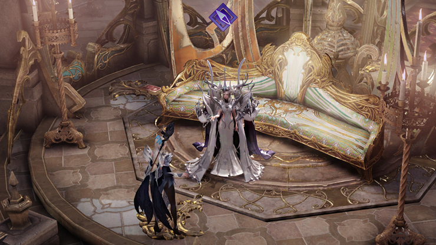
- 인게임에서의 베른의 여왕, 에아달린. 본래 로헨델의 일원이었다.
또다른 한편, 에스더 아제나와 이난나가 다스리던 로헨델에도 변화가 생겼습니다.
아제나와 겨뤘던 악마군단장 아브렐슈드는 사슬전쟁 시기 로헨델의 일부 실린에게 접근하여 내분을 유도했습니다.
'제나일' 부족의 실린을 비롯한 현혹된 일부 실린은 지나친 마법에 대한 욕망을 추구하다 로헨델 일부 지역을 폐허로 만들었으며,
이를 알게된 아제나는 나머지 부족이 그들을 차별할 것을 알고 제나일 부족을 추방하기로 결심한합니다.
결국, 추방된 실린들은 아크라시아 가운데에 위치한 대륙에 자리잡았고, '베른'이라는 또다른 국가를 건설하게 됩니다.
그리고 제나일의 부족장, 에아달린은 그곳의 여왕이 되었고, 갈곳 없는 다른 여러 종족을 전부 받아들여 조화와 창조의 땅으로 발전시켜나갔습니다.
보수적이고 폐쇄적인 고향 로헨델과는 다르게, 무역의 중심지로 떠오르며 개방적인 국가로 자리매김했죠.
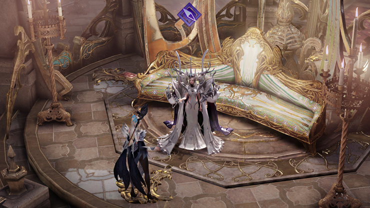
- 인게임에서의 베른의 여왕, 에아달린. 본래 로헨델의 일원이었다.
악마들과의 전쟁이 끝난 이후 악마와 타종족 사이에서 태어난 '데런'이라는 하프 악마 종족이 생겼습니다.
대부분의 중간계 종족들은 이 데런을 차별했고, 증오했으며, 갈곳 없이 버려진 데런들은 세계를 방황하다가
저주받은 땅, '페이튼'으로 향하게 됩니다.
수백년이 지난 뒤, 악마의 힘을 어느정도 제어하게 되었지만, 대부분의 데런은 중간계를 증오했고, 카제로스의 부활을 기다리게 되었습니다.
그러나 일부 데런들은 오히려 자신들을 세상에 존재하게 한 카제로스를 증오하며, 카제로스를 직접 죽이기를 바라게 되었습니다.
그리고 스토리상 중요인물인 아만 역시....
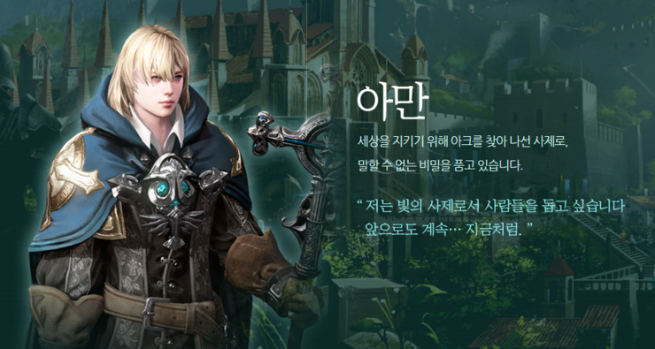- 스포주의 읍읍
한편 에스더의 리더였던 루테란은 기사왕국 루테란의 힘을 공고히 하고,
아르테미스 연방과 베른, 아르테타인, 로헨델과 국교를 수립하며 평화노선을 구축했습니다.
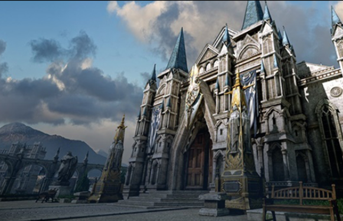
- 중반부까지 스토리의 중심지인 루테란
그로부터 400년, 루테란은 영광과 평화의 시대를 누렸지만, 부유한 귀족들이 왕위찬탈을 위한 음모를 꾸미기 시작했습니다. 그 배후에는...(스토리 진행하시면 알게됩니다^^)
그리고 루테란의 평화를 유지하기 위해 루테란의 후손, 실리안 왕자가 움직이기 시작하죠.
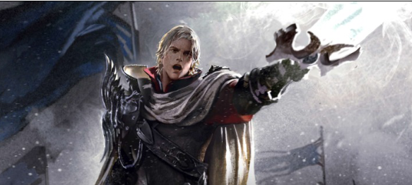
-스토리상 중요인물인 실리안은 에스더의 리더, 루테란의 후손이다.
이렇게 평화의 시대가 오래 지속되자 사람들은 가디언, 아크, 악마에 대한 일을 잊기 시작했습니다.
조금씩, 누군가의 봉인이 풀려가고 있다는 사실을 모른체 말이죠.
다시금 카오스게이트가 열리고 악마들이 서서히 잠식해 오기 시작한 오늘날,
위기를 느낀 운명을 엿보는 종족, 라제니스족의 '베아트리스'는 아크라시아의 위기를 극복하기 위해 각 대륙의 모험가를 운명으로 인도해오게 됩니다.
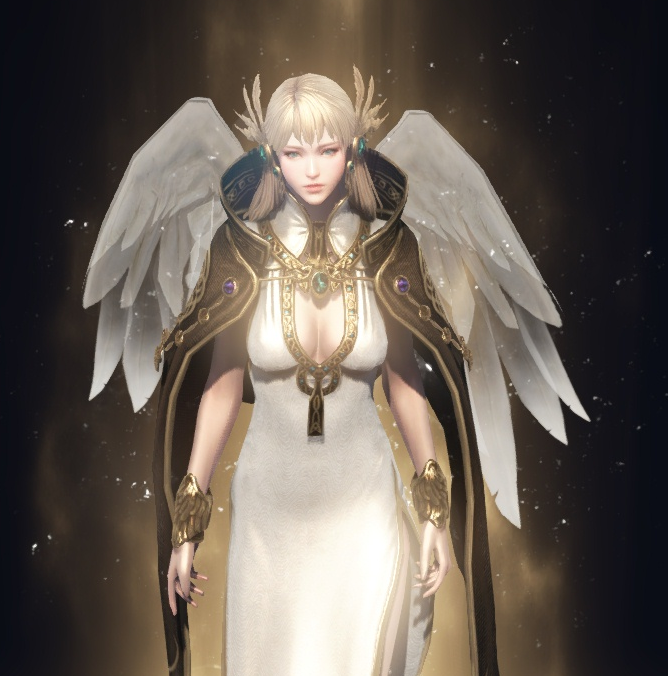
이게 바로 인게임의 시작인거죠.
여기까지가 로스트아크의 대략적인 스토리 요약이었습니다.
아직 풀리지 않은 떡밥이 몇가지 보이네요.
1. 이그하람이 죽으면서 떨어진 2개의 혼의 행방
2. 아크라시아의 멸망 위기에도 등장하지 않는 루페온을 비롯한 여러 신들.
3. 루페온에게 추방당한 불꽃의 신, 안티레스의 행방
4. 아브렐슈드를 시기, 질투하고 있는 비아키스의 존재
5. 최초로 아크를 탐했던 고대 상위 종족, 할 종족이 남아있다면?
6. 중간계에 큰 불만을 지니고 있을 여러 데런 종족.(분란의 씨앗이 될 가능성이 높다 생각합니다.)
7. 악마의 힘에 침식당한 2계위종 가디언 '루'와 에스더 시엔(타락 가능성)
8. 아직 스토리상 크게 등장하지 않은 욘 지방의 우마르족, 림레이크 섬들, 그리고 해저의 포시타족.
9. 악마군단장과 함께 사라진 2계위 종 가디언, 바르칸(거의 최종 레이드급으로 등장할듯 싶네요)
배경 스토리를 조금만 더 흥미롭게 풀어줬어도 재밌었을텐데..
여러모로 설명 요소가 아쉬운 게임...